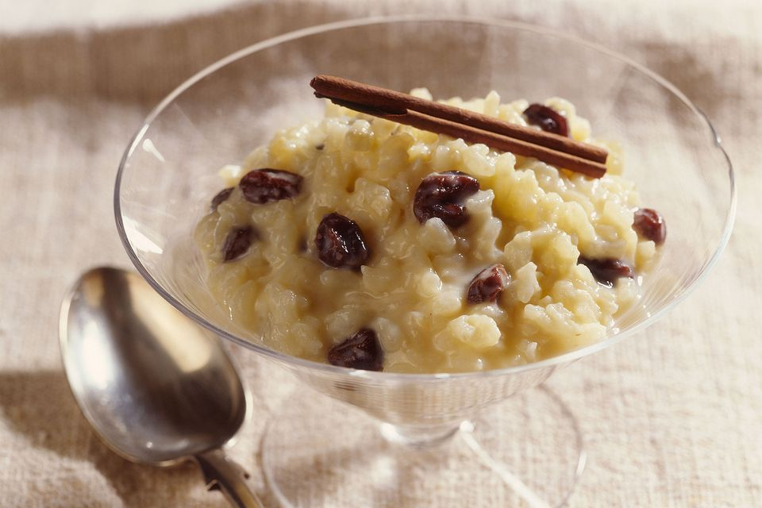

Santa goes Puerto Rican: Arroz con dulce
Description:
Santa like Puerto Rican food, and so should you. Arroz con dulce literally means
"Rice with sweet". Why shouldn't you try that? What are you waiting? DO IT
Ingredientes:
- 1 (1-inch) piece fresh ginger, peeled and sliced
- 2 to 3 medium cinnamon sticks
- 6 whole cloves
- 1 teaspoon kosher salt
- 1 (13.5 to 14-ounce) can of coconut milk
- 1 cup medium or short-grain rice
- 1/2 cup granulated or brown sugar
- 1/2 cup golden raisins
- 1/4 cup sweetened coconut flakes
- 1 teaspoon ground cinnamon, for garnish
Steps:
- INGREDIENTS ASSEMBLE!
- In a large saucepan or pot, bring 3 cups of water to a simmer. Add the ginger pieces,
cinnamon sticks, whole cloves, and salt. Simmer for about 15 minutes until the flavors are
infused into the water.
- Remove the spices and save the infused water.
- Add the coconut milk and 1 more cup of water. Bring to a boil.
- Add the rice, sugar, raisins, and coconut and thoroughly stir. Reduce the heat to a simmer,
cover, and cook for 20 minutes, stirring a few times.
- After 20 minutes, remove the lid and stir. Continue to cook for another 20 to 30 minutes or until
the rice is cooked through and creamy. The water should be absorbed. If the water is absorbed but the rice
is still not cooked, add a little hot water (about 1/4 cup) at a time and continue to cook until done.
- Once the rice is cooked, pour into your serving dish or dishes. Allow to cool and place in the refrigerator to
chill until ready to serve. Garnish with cinnamon before serving and enjoy!
Tips
- Double-check that you are using medium or short-grained rice and not long-grained rice.
- This isn’t a recipe you can leave unattended. It will need stirring to keep it from sticking and burning in the pan.
- It’s meant to be served cold. To speed up chilling, put the finished rice in your serving dish or individual dessert cups and refrigerate before serving.
- The amounts of spices are flexible, so feel free to adjust them to your preferences.
- Save a few raisins and maybe a cinnamon stick for garnish.
- That's it. Super easy. You can't mess up. No pressure.